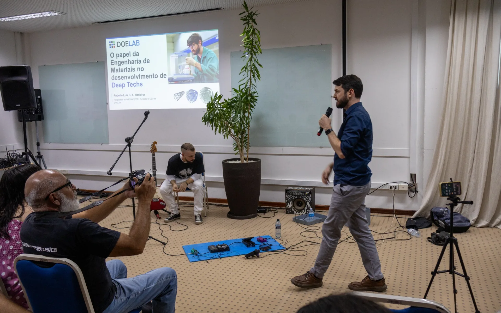
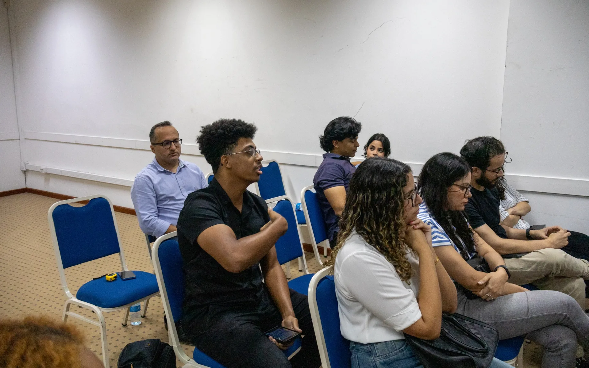
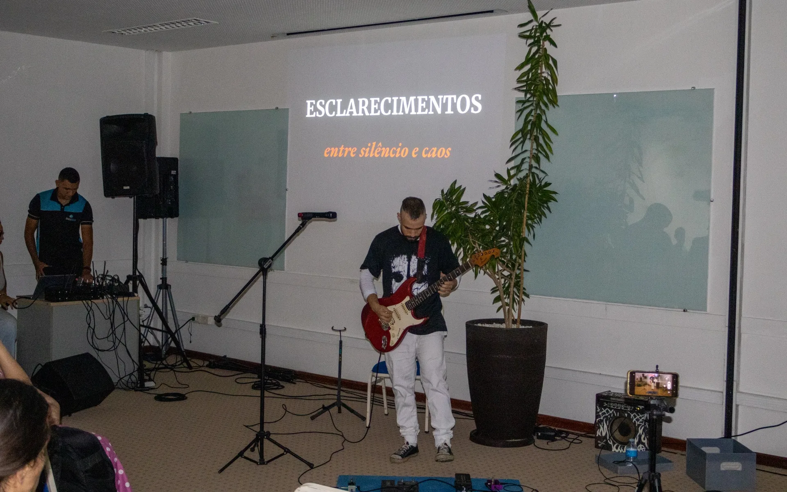
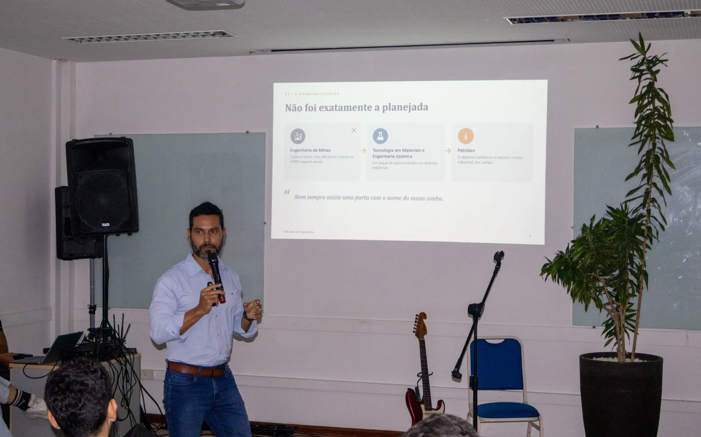
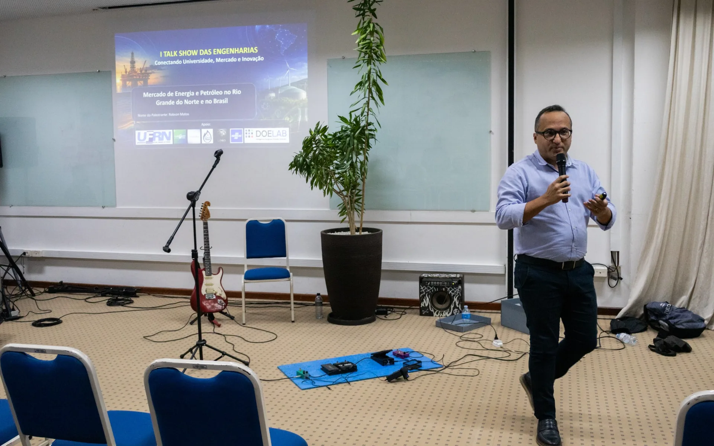
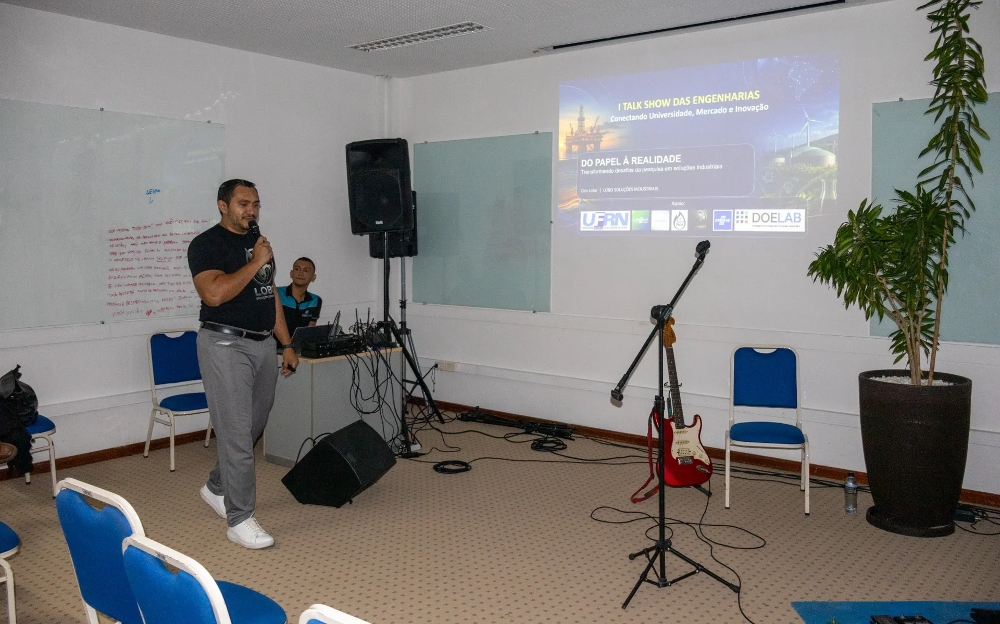
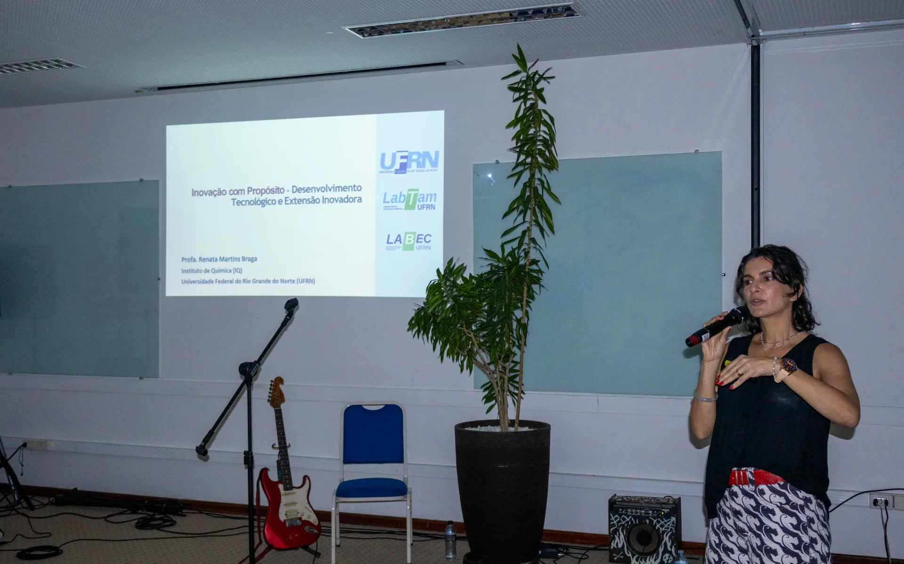
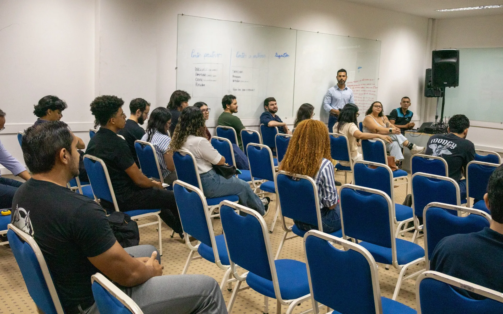

01 / PESQUISA & TECNOLOGIA
Onde os materiais encontram o futuro.
O papel da Engenharia de Materiais no desenvolvimento de Deep Techs e no avanço de soluções baseadas em ciência.
Rodolfo LuizPesquisador · LabTam/UFRN
Uma experiência entre conhecimento e prática
Conectando universidade,
mercado e inovação.
Ele começa quando diferentes trajetórias, experiências e ideias se encontram.
Em 15 de outubro de 2026, pesquisadores, professores, estudantes e profissionais se reuniram no Sebrae, em Natal, para aproximar a universidade dos desafios e das oportunidades do mundo do trabalho.
O I Talk Show das Engenharias abriu espaço para conversas sobre tecnologia, energia, petróleo e gás, pesquisa aplicada e empreendedorismo — e, principalmente, sobre os caminhos possíveis para quem vive a engenharia.
Conheça as conversas

Para além da sala de aula.
Para dentro do mundo.
Cinco perspectivas registradas na cobertura do evento. Da pesquisa de fronteira à prática industrial, cada conversa ampliou o horizonte da engenharia.

O papel da Engenharia de Materiais no desenvolvimento de Deep Techs e no avanço de soluções baseadas em ciência.

As perspectivas para a formação e a atuação profissional nas áreas de petróleo e gás, com atenção aos desafios reais do mercado.

Perspectivas para o setor de energia e petróleo no Rio Grande do Norte e no Brasil, conectando oportunidades e desenvolvimento.

Experiências de inovação tecnológica e as decisões necessárias para transformar desafios de engenharia em soluções industriais.

Os potenciais da pirólise e do aproveitamento energético da biomassa, além dos caminhos da pesquisa e da inovação no Brasil.
Os temas acima sintetizam as apresentações destacadas na matéria publicada pelo Portal da UFRN; não representam transcrições integrais das falas.

Nossa ideia foi proporcionar uma conversa que fosse além dos conteúdos apresentados em sala de aula.
ÂNGELO ANDERSON DE OLIVEIRA — Organizador · PPgEP/UFRN
UMA TARDE, MUITAS HISTÓRIAS
Dos bastidores às perguntas, das apresentações às conversas informais. Uma memória visual da primeira edição.
Carregando o acervo fotográfico…
Selecione uma fotografia para ampliar e navegar pelo acervo.
UM PONTO DE PARTIDA
A primeira edição do Talk Show das Engenharias reuniu diferentes olhares sobre um mesmo desafio: aproximar a formação acadêmica das práticas, das mudanças e das possibilidades do setor produtivo.
Mais do que documentar uma programação, este acervo preserva encontros, perguntas e experiências compartilhadas — uma memória aberta de um dia dedicado ao diálogo.
Leia a cobertura jornalística do encontro publicada pela Universidade Federal do Rio Grande do Norte.